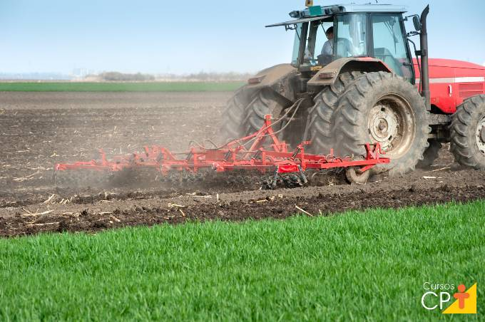
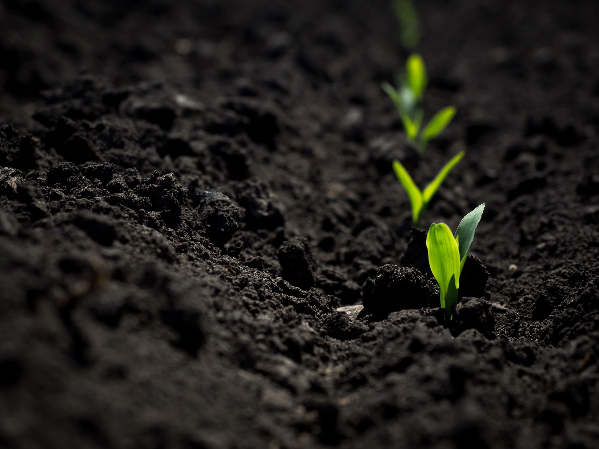
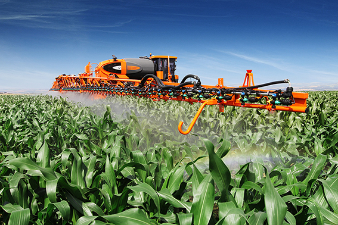
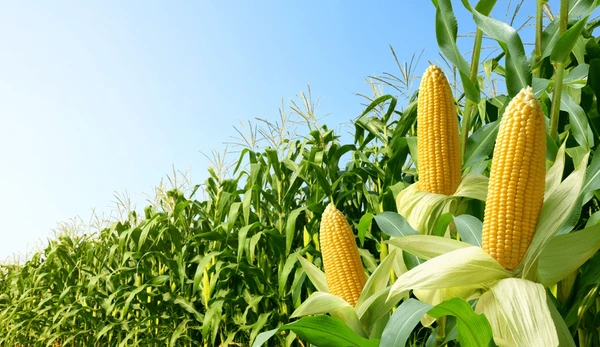
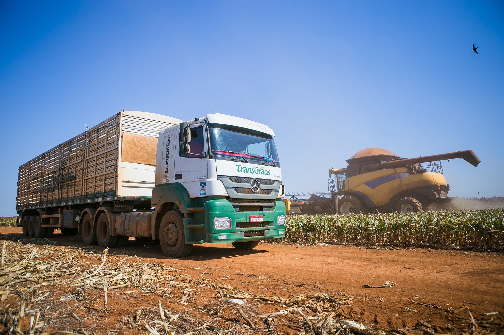
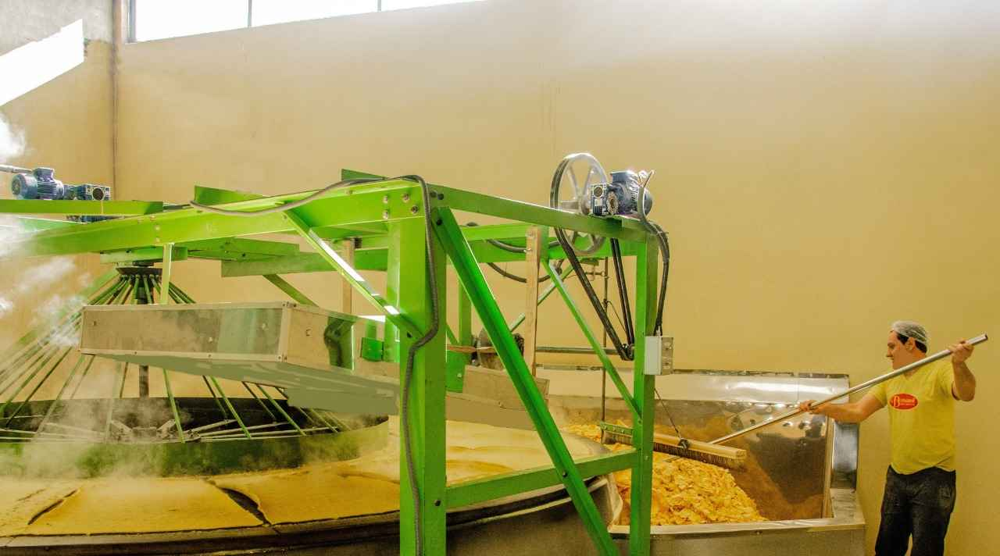
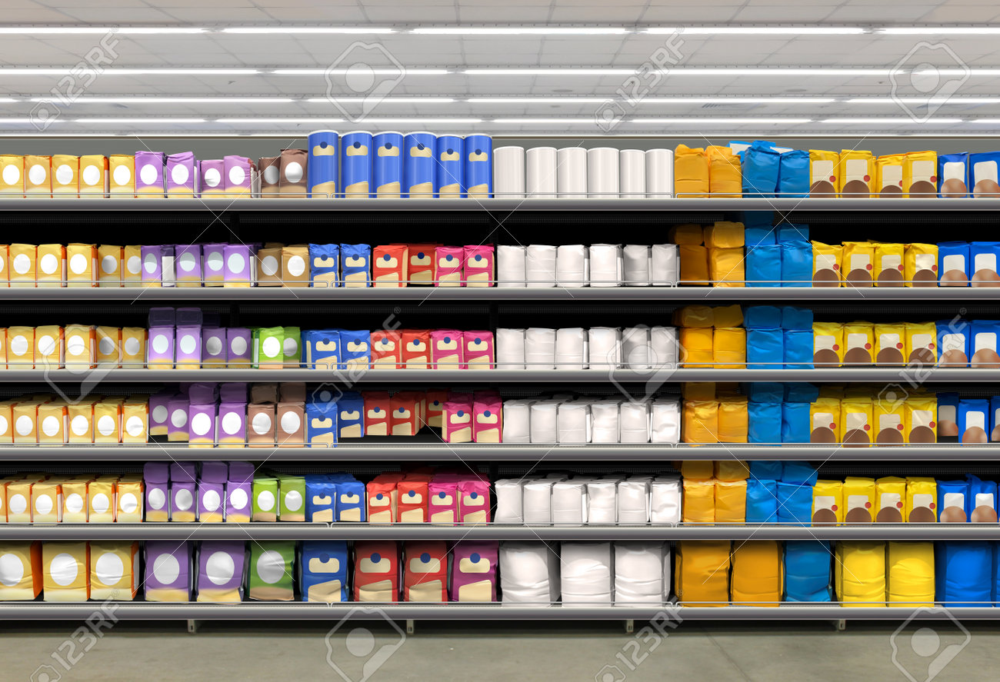

Preparação do solo.

O primeiro passo da produção é preparar o solo para o plantio.
plantação do milho

A próxima etapa é o plantio do milho.
Cuidados com a plantação.

A próxima etapa é o cuidado com o plantio,como passar veneno na plantação.
Colheita do milho

Após 90 dias o milho está pronto para a Colheita.
transporte para a indústria.

Após a colheita, o milho é levado para a indústria onde será produzido a farinha de milho.
chegando na industria

chegando o produto na empresa, comecará o processo da produção da farinha.
área de vendas.

após a produção, o produto é levado para o comércio onde será vendido e consumido.